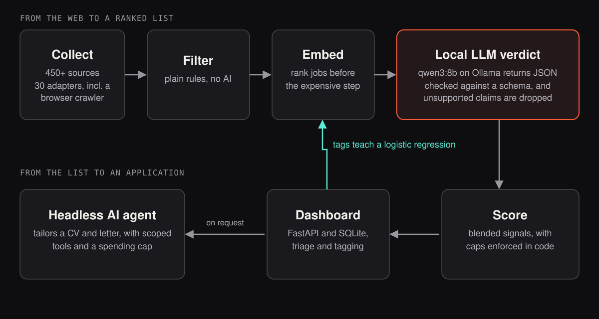
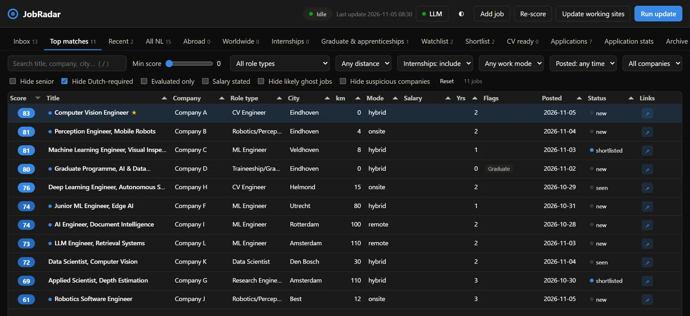
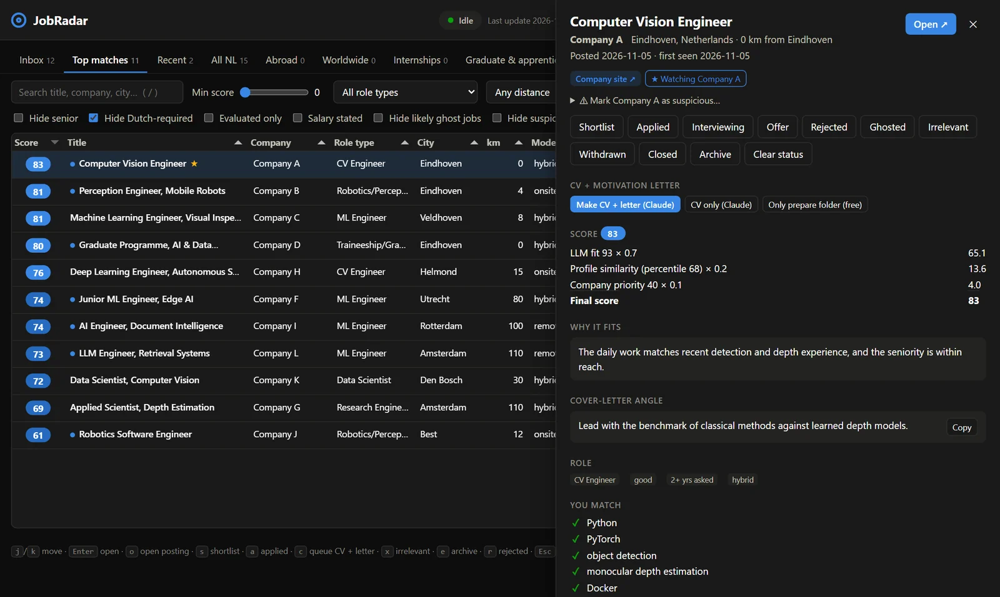
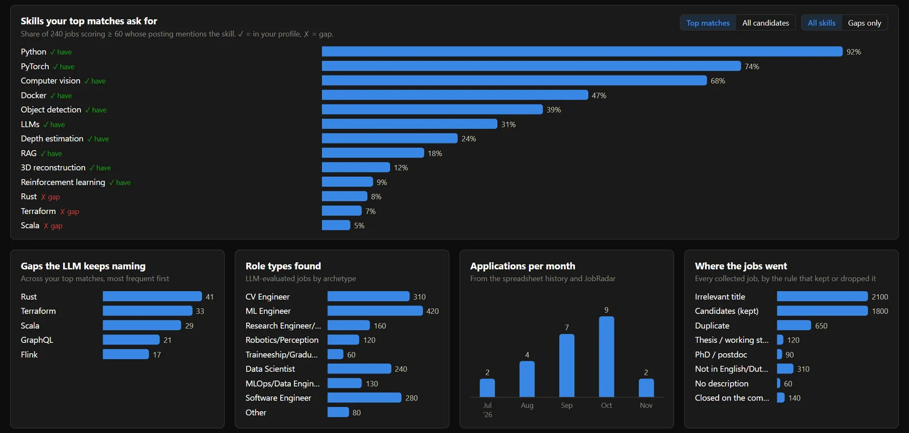

A job search is a data problem: too many sources, too much noise. JobRadar collects postings, ranks them with a local LLM, learns from what I tag, and runs on my own machine.
A small local LLM is cheap and private, but it doesn't reliably follow instructions.
So the model gives its opinion, and code has the final say.

This is the real interface, running on made-up sample data: the jobs, scores and charts below are illustrative, and the companies are placeholders. My real job search stays private.



One button in the dashboard starts Claude Code running headless, which tailors a CV and letter for that job. JobRadar orchestrates the agent rather than implementing one. For an agent loop I wrote myself, see the local AI agent.
The agent runs with an explicit list of allowed tools.
Revisions continue the same session instead of starting from nothing.
Every run has a budget limit, so a loop can't run up costs.